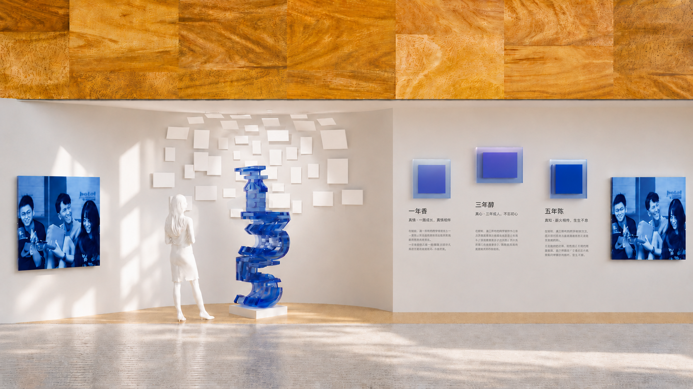
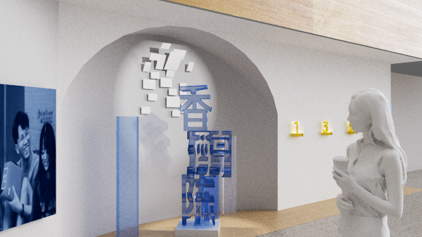
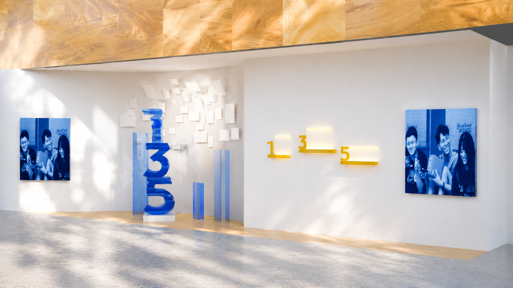

Nianchen: For Ant Group Lobby Installation Design
This project was designed for the lobby space of Ant Group, centered around the employee milestone culture of “一年香 · 三年醇 · 五年陈” (“One-Year Fragrance, Three-Year Mellow, Five-Year Aged”). Through a large-scale anamorphic chinese typographic installation, the project transforms abstract concepts of growth, memory, and organizational identity into a spatial experience embedded within the workplace environment.
Role: Installation Design, 3D Modeling Design
Tools: Cinema 4D, Redshift


